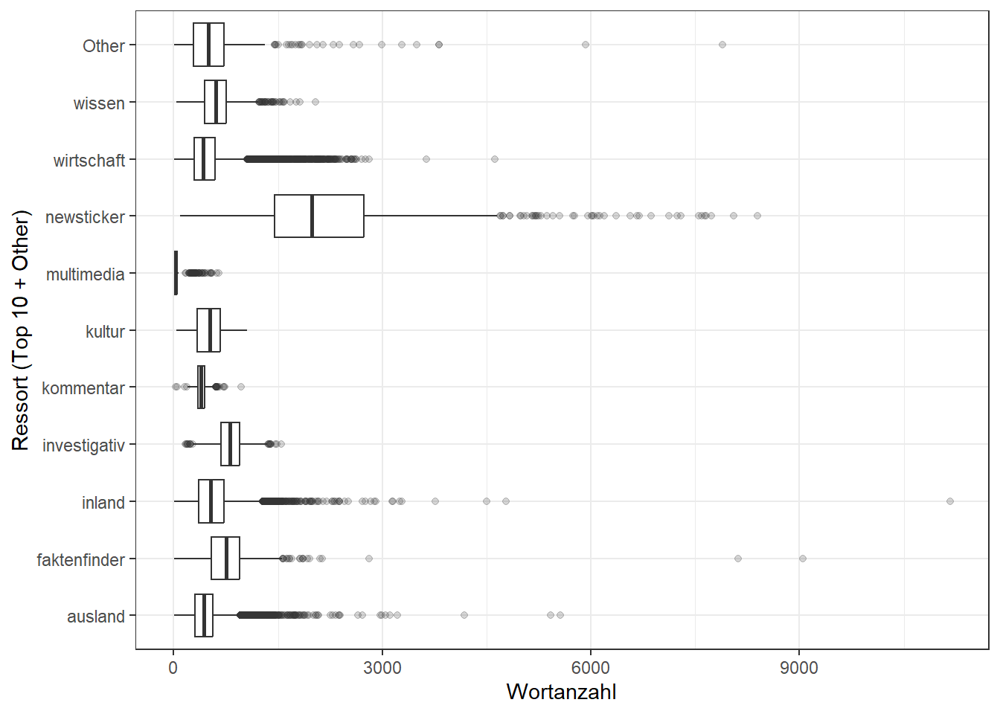

Nachdem wir in Kapitel 3 die Tagesschau-Daten geladen und einen ersten Überblick über die enthaltenen Informationen gewonnen haben, wollen wir uns nun genauer mit den einzelnen Variablen beschäftigen.
5.1 Übersicht der Variablen
Um eine Übersicht über die in einem Datensatz enthaltenen Variablen zu bekommen, können wir die Funktion glimpse() verwenden. Sie gibt uns einen schnellen Überblick über die Struktur des Datensatzes, einschließlich der Namen der Variablen, ihrer Datentypen und einiger Beispielwerte.
ts |>glimpse()
Rows: 59,500
Columns: 21
$ supertitle <chr> "ARD-DeutschlandTrend Januar 2006", "Treffen der EU-Inn…
$ title <chr> "ARD-DeutschlandTrend Januar 2006", "Grundzüge für geme…
$ date_time <dttm> 2006-01-05 10:50:33, 2006-01-13 13:47:00, 2006-01-13 1…
$ author <chr> "Jörg Schönenborn", "tagesschau.de", "tagesschau.de", "…
$ ressort <chr> "inland", "ausland", "inland", "ausland", "wirtschaft",…
$ url <chr> "https://www.tagesschau.de/inland/deutschlandtrend/meld…
$ thumbnail <chr> "\"https://images.tagesschau.de/image/47dedcab-ee73-4e8…
$ tag <chr> NA, NA, "INTERVIEW", NA, "HINTERGRUND", NA, NA, NA, "IN…
$ shorttext <chr> "Angela Merkel hat in den ersten sechs Wochen ihrer Amt…
$ description <chr> "Angela Merkel hat in den ersten sechs Wochen ihrer Amt…
$ keywords <chr> "[\"DeutschlandTrend\"]", "[\"Meldung\"]", "[\"Intervie…
$ date_modified <dttm> 2021-01-28 10:32:31, 2023-03-01 23:51:29, 2023-03-01 1…
$ canonical_url <chr> "https://www.tagesschau.de/inland/deutschlandtrend/meld…
$ language <chr> "de", "de", "de", "de", "de", "de", "de", "de", "de", "…
$ paragraphs <chr> "[\"Bundeskanzlerin Angela Merkel hat in den ersten sec…
$ text <chr> "Bundeskanzlerin Angela Merkel hat in den ersten sechs …
$ word_count <dbl> 569, 406, 658, 264, 601, 399, 262, 516, 801, 433, 567, …
$ image_urls <chr> "[\"https://images.tagesschau.de/image/47dedcab-ee73-4e…
$ image_captions <chr> NA, NA, NA, NA, NA, NA, NA, NA, NA, NA, NA, NA, NA, NA,…
$ related_links <chr> NA, NA, NA, NA, NA, NA, NA, NA, NA, NA, NA, NA, NA, NA,…
$ source_file <chr> "2006-01-05-articles.jsonl", "2006-01-13-articles.jsonl…
5.2 Fehlende Werte
Fehlende Werte (missing values) sind in realen Datensätzen völlig normal: Manche Informationen sind für einen Beitrag nicht vorhanden (z.B. kein:e Autor:in), wurden beim Scraping nicht gefunden oder sind nur für bestimmte Ressorts sinnvoll.
Ein erster, sehr nützlicher Schritt ist ein „Missingness-Profil“: Welche Spalten haben überhaupt fehlende Werte – und wie viele?
Spalten mit sehr vielen fehlenden Werten eignen sich oft eher als optionale Zusatzinformationen.
Spalten mit wenigen fehlenden Werten sind meist robuste „Kernvariablen“.
Wenn wichtige Variablen viele NAs enthalten, lohnt sich Ursachenforschung (Erhebung, Scraper, Parsing, Definition der Variable).
Wenn du eine kompakte, gut lesbare Gesamtsicht möchtest, ist skimr sehr praktisch (inkl. Missingness, Verteilungen, Beispiele). Damit die Kapitel auch ohne das Paket rendern, ist es hier optional:
if (requireNamespace("skimr", quietly =TRUE)) { skimr::skim(ts)} else {cat("Optional: install.packages('skimr') für eine kompakte Variable-Übersicht.\n")}
Data summary
Name
ts
Number of rows
59500
Number of columns
21
_______________________
Column type frequency:
character
18
numeric
1
POSIXct
2
________________________
Group variables
None
Variable type: character
skim_variable
n_missing
complete_rate
min
max
empty
n_unique
whitespace
supertitle
0
1.00
3
67
0
46474
0
title
0
1.00
3
146
0
58902
0
author
16625
0.72
3
476
0
5216
0
ressort
5
1.00
2
37
0
38
0
url
0
1.00
38
174
0
59433
0
thumbnail
22
1.00
67
320
0
41449
0
tag
32797
0.45
2
76
0
375
0
shorttext
7
1.00
10
717
0
59056
0
description
7
1.00
10
807
0
59059
0
keywords
638
0.99
5
763
0
41962
0
canonical_url
6
1.00
31
174
0
59231
0
language
1
1.00
2
2
0
4
0
paragraphs
323
0.99
22
84250
0
58986
0
text
323
0.99
18
84140
0
58986
0
image_urls
6140
0.90
128
166482
0
48806
0
image_captions
49446
0.17
10
4379
0
9434
0
related_links
42196
0.29
42
27104
0
17122
0
source_file
0
1.00
25
25
0
6351
0
Variable type: numeric
skim_variable
n_missing
complete_rate
mean
sd
p0
p25
p50
p75
p100
hist
word_count
323
0.99
540.12
402.18
3
320
461
657
11165
▇▁▁▁▁
Variable type: POSIXct
skim_variable
n_missing
complete_rate
min
max
median
n_unique
date_time
29
1.00
2006-01-05 10:50:33
2025-12-31 20:29:48
2023-06-05 17:39:28
59372
date_modified
627
0.99
2007-05-10 14:15:00
2026-02-09 17:57:43
2024-11-07 18:20:14
58867
5.3 Duplikate
Duplikate können in News-Daten aus verschiedenen Gründen entstehen: ein Artikel wurde mehrfach gespeichert, die gleiche URL taucht in mehreren Quellfiles auf, oder Inhalte sind sehr ähnlich.
In der Praxis definieren wir Duplikate über eine eindeutige ID. Bei Webdaten ist das häufig die url (oder canonical_url). Schauen wir zuerst, ob es URLs gibt, die mehrfach vorkommen:
ts |>count(url, sort =TRUE) |>filter(!is.na(url), n >1)
Wenn du wissen willst, welche Datensätze dahinterstehen, kannst du dir einzelne Fälle anzeigen lassen. Das ist ein typischer Debugging-Schritt in der Datenbereinigung:
Für viele Analysen (z.B. Zählen, Zeitreihen) willst du Duplikate entfernen, damit Ergebnisse nicht „aufgeblasen“ werden. Wenn url eindeutig sein soll, kannst du eine deduplizierte Version erzeugen:
Wichtig: Welche Zeile du bei Duplikaten behältst (erste/letzte, nach date_modified, nach Datenqualität) ist eine fachliche Entscheidung. arrange() vor distinct() macht diese Entscheidung explizit und reproduzierbar.
5.4 Wertebereiche
Wertebereiche (ranges) sind ein schneller Plausibilitätscheck. Gerade numerische Variablen enthalten manchmal Ausreißer oder „kaputte“ Werte (z.B. negative Längen, extrem große Zählwerte), die aus Parsing- oder Scraping-Problemen stammen.
Im Datensatz gibt es z.B. word_count (Wortanzahl) und oft auch paragraphs (Absatzanzahl). Wir schauen uns typische Kennzahlen und Ausreißer an:
Eine Visualisierung macht Verteilungen und Ausreißer noch schneller greifbar. Ein Histogramm zeigt dir, wie „lang“ Tagesschau-Beiträge typischerweise sind:
ts |>ggplot(aes(x = word_count)) +geom_histogram(bins =50, na.rm =TRUE) +theme_bw() +labs(x ="Wortanzahl", y ="Anzahl der Beiträge")
Und ein Boxplot nach Ressort ist nützlich, um Unterschiede zwischen Kategorien sichtbar zu machen (z.B. sind Wirtschaftsartikel im Schnitt länger?):
ts |>filter(!is.na(ressort), !is.na(word_count)) |>mutate(ressort =fct_lump_n(ressort, n =10)) |>ggplot(aes(x = ressort, y = word_count)) +geom_boxplot(outlier.alpha =0.2) +coord_flip() +theme_bw() +labs(x ="Ressort (Top 10 + Other)", y ="Wortanzahl")

Warum ist das für Data Analytics hilfreich?
Du bekommst ein Gefühl für „typische“ Inhalte (Baseline), bevor du Modelle baust.
Ausreißer-Fälle sind oft inhaltlich spannend (Breaking News) oder Datenprobleme.
Kategorienvergleiche liefern schnell Hypothesen für tiefergehende Analysen (z.B. Trends je Ressort).